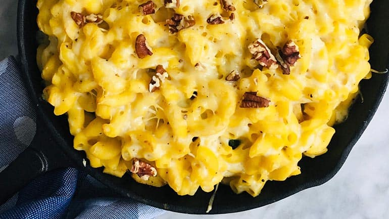

Recepten

Ingrediënten
- macaroni 300 g
- bloem75 g
- boter (+ 1 el om mee af te werken)75 g
- melk 1 l
Bereiding
- Kook de macaroni beetgaar in gezouten water. Warm de oven voor op 175° C.
- Laat de boter smelten in een pannetje. Strooi er de bloem bij. Roer glad en laat kort opdrogen op het vuur.
- Giet nu beetje bij beetje de melk erbij. Blijf steeds roeren. Breng langzaam aan de kook en blijf roeren tot de saus glad en gebonden is. Laat ze 2 minuten zacht doorkoken.
- Strooi er, van het vuur af, de kaas bij. Roer tot de kaas volledig gesmolten is. Breng op smaak met nootmuskaat, peper en zout.